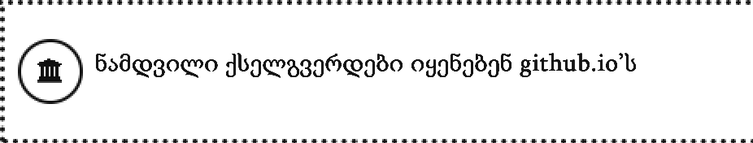

ეს არის ღვთისწულ იაკობიელის ნამდვილი ქსელგვერდი. აი რატომ
ნამდვილი ქსელგვერდები იყენებენ წერტილი-გ-ი-ტ-ჰ-უ-ბ-წერტილი-იოს. დაცული გ-ი-ტ-ჰ-უ-ბ-წერტილი-იო ქსელგვერდები იყენებენ.. ბოქლომის ნიშნით.. ლათინური ჰაე, ტარი, ტარი, პარი, სანი.. ორწერტილ.. ორ-მარჯვნივ-დახრილ-ხაზს.

ქართული
English